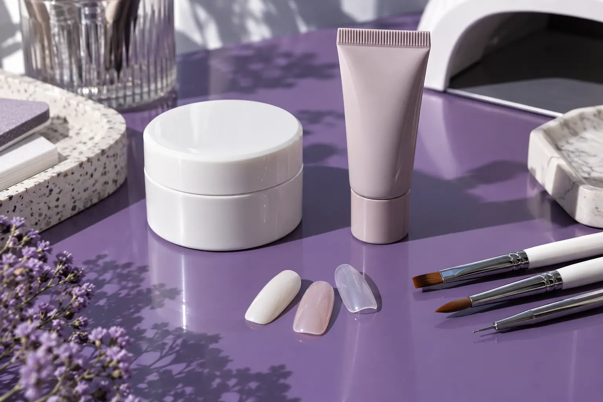

Gelis, akrilas ir poligelis: medžiaga, konstrukcija bei pasirinkimo ribos
Autorius: Madbeauty redakcija · 2026 m. gruodžio 25 d. 10:00 Lietuvos laiku
Palyginkite tris konstrukcines sistemas ir atskirkite nagą formuojantį produktą nuo spalvinio užbaigimo. Gamintojų pavyzdžiai parodo, kuo skiriasi jų paruošimas ir paskirtis.

Gelis, akrilas ir poligelis nėra vienodos sistemos skirtingais pavadinimais. Akrilo pavyzdyje konstrukcija formuojama iš skysto monomero ir miltelių; gelinis builder produktas pats kuria konstrukciją; „Gelish PolyGel“ yra tūbelėje paruošta hibridinė modeliavimo sistema. Spalva gali būti atskiras paviršiaus sluoksnis, todėl vien meniu pavadinimo nepakanka palyginti visą paslaugą.
Konstrukcija ir spalva atlieka skirtingus darbus
Konstrukcinis produktas naudojamas nago formai, ilgiui ar esamai konstrukcijai kurti ir koreguoti. Gelinis lakas gali suteikti spalvą bei blizgesį, tačiau tai savaime nepasako, kokia medžiaga suformuota konstrukcija. OPI aprašomuose pavyzdžiuose „GELevate“ builder gel kuria konstrukciją, o „GelColor“ skirtas spalvai ir blizgesiui; gamintojo mokomojoje akrilo medžiagoje „GelColor“ taip pat pateikiamas kaip atskiras užbaigimo žingsnis. OPI paaiškinimas apie gelinius nagus.
Trys gamintojų pavyzdžiai
- OPI „Liquid Perfection“ akrilas — konstrukcija formuojama naudojant skystą monomerą ir akrilo miltelius; mokomojoje medžiagoje nurodyta, kad produktas sustingsta prieš dildymą. Gelinis lakas gali būti atskiras spalvinis užbaigimas. OPI akrilo produkto mokomoji medžiaga.
- OPI „GELevate“ builder gel — konstrukcinis produktas, kurį gamintojas nurodo naudoti dengimui, papildymui, galiukų tvirtinimui ir trumpam ar vidutiniam ilgiui kurti. „GelColor“ atlieka spalvos ir blizgesio funkciją; tai atskira produkto paskirtis. OPI paaiškinimas apie gelinius nagus.
- „Gelish PolyGel“ — gamintojo aprašoma tūbelėje paruošta hibridinė modeliavimo sistema. Ji modeliuojama ir kietinama gamintojo nurodyta lempa. Šis aprašas tinka būtent šiam produktui; iš jo negalima spręsti apie visų gamintojų poligelius. Gelish PolyGel sistemos aprašas.
Tai konkrečių produktų pavyzdžiai, o ne universalios visų akrilo, gelio ar poligelio sistemų instrukcijos. Ypač svarbu atskirai įvardyti konstrukcinį produktą ir spalvinį sluoksnį: lempa ar gelinis lakas savaime neparodo, iš ko padaryta pagrindinė konstrukcija.
Palyginkite pagal norimą rezultatą
- Ilgis ir paskirtis: ar norite dirbti su esamu nago ilgiu, sukurti papildomą ilgį, ar koreguoti jau esančią konstrukciją?
- Produkto forma ir paruošimas: ar kalbama apie monomerą su milteliais, builder gel produktą, ar konkrečią tūbelėje paruoštą hibridinę sistemą?
- Paviršius: ar spalva ir dizainas yra atskiri pasiūlymo darbai, ir ar nurodyti produktai skirti naudoti kartu?
- Visa vizito apimtis: ar įskaičiuotas ankstesnės dangos nuėmimas, ilgio kūrimas, spalva ir vėlesnis papildymas ar korekcija?
Jei norite platesnio paaiškinimo apie ilgio kūrimą, konstrukciją ir papildymą, tęskite nagų priauginimo gide.
Pavyzdys: norisi ilgesnių nagų ir vienspalvės dangos
Įsivaizduokite, kad norite papildomo ilgio ir raudonos spalvos, o ant nagų jau yra ankstesnė danga. Tai iliustracinė situacija, ne konkretaus žmogaus rekomendacija. Pirmiausia palyginkite, kokia sistema kuria papildomą ilgį: pavyzdžiui, OPI akrilo sistemoje monomeras ir milteliai naudojami konstrukcijai, o „GELevate“ yra builder gel konstrukcijos produktas. „Gelish PolyGel“ yra atskira tūbelėje paruošta modeliavimo sistema. Tada atskirai patikrinkite, kaip į pasiūlymą įtraukti spalvinis užbaigimas ir ankstesnės dangos nuėmimas. Taip lyginsite panašios apimties vizitus, o ne vien sistemos pavadinimus.
Saugumas priklauso nuo konkretaus produkto ir darbo
Nė vienas sistemos pavadinimas savaime neįrodo, kad produktas visiems tinkamas, saugiausias ar patvariausias. Amerikos dermatologų akademijos vartotojų informacijoje aptariama dirbtinių nagų pažeidimo rizika, galimos reakcijos į naudojamus produktus ir tai, kad nago problemų nereikėtų slėpti dirbtine danga. Šios gairės nėra Lietuvos teisės ar konkretaus produkto instrukcija. AAD informacija apie manikiūro saugą ir dirbtinių nagų pažeidimo riziką padeda suprasti vartotojui aktualias ribas, bet nenustato konkrečios sistemos tinkamumo jums.
Procedūrų aprašai kataloge: Nagų priauginimas geliu, Nagų priauginimas akrilu, Nagų priauginimas poligeliu. Miestą ir realaus teikėjo pasiūlymą pasirinkite kataloge, kai tokia pasiūla pateikta.
Susiję gidai
Šaltiniai
- Gelish · PolyGEL sistemos aprašas · gelish.com
- AAD · manikiūro ir pedikiūro sauga · www.aad.org
- AAD · dirbtinių nagų rizikos · www.aad.org
- OPI · Liquid Perfection Acrylic Tip and Overlay · OPI
- OPI · gelinis lakas ir konstrukcinis builder gel · OPI